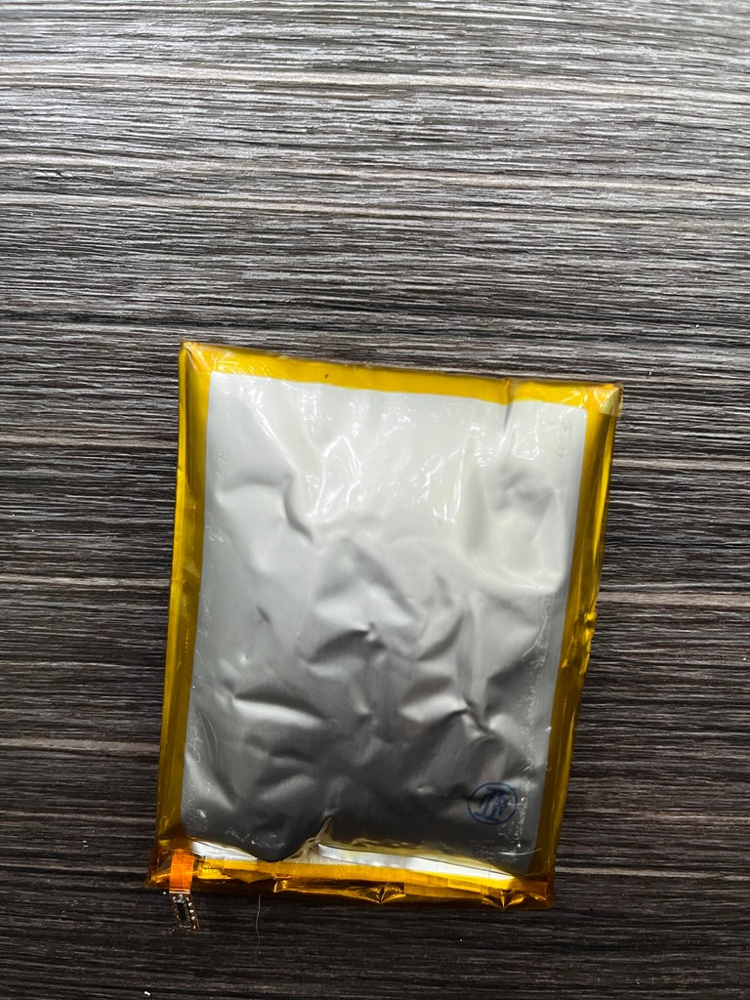

現在の音声ガイドは、7インチのタブレットを来園者へ貸し出す方式で運用されています。
この方式は、安全面・継続性・運用コストの3方向で限界に近づいています。以下に整理いたします。
最優先課題1：貸出タブレットのバッテリー発火リスク
すでに「ヒヤリハット」は起きています
これまでに、貸出タブレット4台でバッテリーの重大な異常が発生しています。いずれも、
バッテリーパックが膨張して内側から液晶画面を押し上げ、画面が割れ、電解液が漏れ出すという状態でした。

実際に回収されたバッテリーパック。内部のガス発生によりパウチが膨張し、パンパンに張っている状態が確認できます。
リチウムイオンバッテリーの膨張は、内部でガスが発生していることを意味します。これは発火・破裂の直接的な前兆であり、
「膨らんでいるが今のところ発火はしていない」状態は、安全とは正反対の危険信号です。
労働災害の分野で知られるハインリッヒの法則では、1件の重大事故の背後に29件の軽微な事故、そして300件のヒヤリハット
（危うく事故になりかけた事象）が存在するとされています。今回確認されている4台は、まさにこの前段階の警告サインです。
しかも、これは現場で異常に気づけた分だけであり、気づかれていない個体がさらに存在する可能性があります。
対策を取らなければ、重大事故が起きるのは時間の問題と考えるべき状況です。
サファリパークだからこそ、被害が深刻化します
- 猛獣エリア走行中は、車外に避難できません。通常の道路であれば車を停めて降りればよいところ、サファリではライオンなどの肉食獣に囲まれた車内で発火した場合、お客様は逃げ場を失います。
- 夏場の車内は高温になり、リチウムイオンバッテリーの熱暴走を加速させます。発火リスクが最も高まる条件が、来園のピークシーズンと重なります。
- 同乗者に小さなお子様や高齢の方が含まれるケースも多く、避難がさらに困難になります。
一度の事故が、経営全体を揺るがします
車両火災が発生すれば、負傷者・物損への賠償責任にとどまりません。
- SNSやニュースで「サファリの貸出機材から出火」と拡散 → 来園者の安全そのものへの不信
- 行政指導・営業自粛の可能性、風評による長期的な集客減
- 「防げたはずの事故だった」と報じられれば、経営責任が問われる
対策にかかる費用は、事故が一度でも起きたときの損失とは比較になりません。
課題2：現行システムは、近い将来維持できなくなります
- 純正部品はすでに調達できず、互換品に頼るしかありません。その互換部品も在庫に限りがあり、いずれ入手できなくなります。
- 現行システムは7インチ画面に固定して設計されています。7インチ以外の端末ではレイアウトが崩れるため、別サイズの端末に乗り換えるにはプログラム全体の再設計が必要です。これは初期投資を上回る費用がかかります。
- つまり、タブレットの寿命がそのままシステムの寿命になります。老朽化しても、更新することも別の機種に乗り換えることもできない「行き止まり」の構造です。
アプリ化すれば、来園者ご自身のスマートフォンで動作するため、特定の端末に縛られません。OSのアップデートに追従しながら長期的に運用できます。
課題3：日々の運用負荷とコスト
現行方式では、以下の作業が毎日発生しています。
- 貸出と回収：入園時に1台ずつ手渡し、退園時に回収。渡し忘れ、充電残量の確認が常につきまといます。
- タブレットの運搬：出口で回収した端末を入口へ運び戻す作業に、専任の人員が必要です。
- 充電管理：全台数の充電状態を管理し続ける必要があります。
- データ更新：動物情報などを更新するたびに、全タブレットを1台ずつ更新しなければなりません。さらに現行の更新用PCソフトは処理が遅く、作業に時間がかかっています。
アプリ化すれば、貸出・回収・運搬・充電管理はすべて不要になります。データ更新もサーバー側を1回更新するだけで、全来園者に即座に反映されます。
アプリ化で得られること（まとめ）
| 観点 | 現行（貸出タブレット） | アプリ化後 |
|---|
| 安全性 | すでに4台でバッテリー膨張・液晶割れ・液漏れ。発火リスクを常に抱える | 貸出機を廃止し、リスクをゼロに |
| 継続性 | 部品切れ・7インチ固定で更新も乗り換えも不可 | 端末に縛られず長期運用が可能 |
| 運用 | 貸出・回収・運搬・充電・全台データ更新 | すべて不要／サーバー更新1回で完結 |
| 来園者体験 | 貸出機の台数制限・順番待ち、操作に不慣れ | 使い慣れた自分のスマホ、文字サイズ調整も自在 |
| 多言語 | 端末ごとに対応が必要 | 言語追加が容易（インバウンド・中国語対応など） |
| 衛生面 | 不特定多数が触れる貸出機 | 各自のスマホのみ |
最優先で対応すべきはバッテリーの発火リスクです。防げる事故は、起きる前に防ぐべきです。
加えて、現行システムはそう遠くない時期に維持できなくなり、日々の運用負荷も小さくありません。
ガイドアプリ化は、安全・継続性・コストの3方向を一度に解決する打ち手です。
具体的なお見積もりは、以下のページからご確認いただけます。
← お見積り資料一覧に戻る